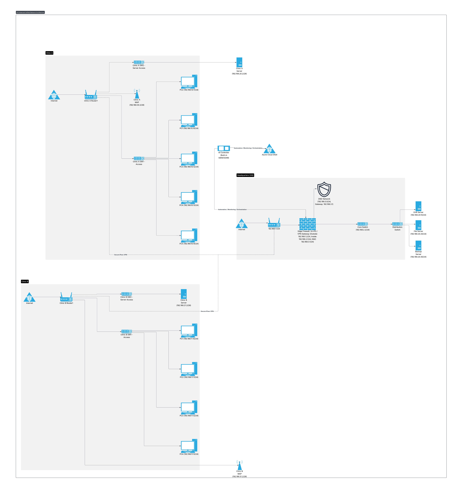

Project objective
Improve latency, throughput, scalability, visibility, and incident response across a headquarters location, clinics, cloud services, and remote users.
What I produced
- Created a network model containing routers, switches, firewalls, clinic servers, headquarters servers, wireless access, a DMZ, and cloud administration.
- Used IPsec VPN connectivity to link distributed sites.
- Designed an AI controller concept with SIEM/SOAR functions for anomaly detection, alert prioritization, scaling, and optimization.
- Produced GNS3, JSON, and architecture-diagram artifacts and documented expected behavior.
Key decisions
- Keep core security enforcement in conventional firewalls and access controls while using AI for analysis and recommendations.
- Centralize logs and telemetry so events from every site can be correlated.
- Use cloud resources to offload demand during telehealth and patient-portal peaks.
- Require human review for high-impact automated security actions.
Multi-siteHeadquarters and clinic connectivity
Central telemetryCross-site monitoring and alert correlation
Human oversightReview of high-impact automated actions
Validation and analysis
- Compared current and proposed latency and throughput behavior.
- Explained resource-management and scaling triggers.
- Defined monitoring, performance, security, and oversight considerations for the AI-assisted design.
What I would improve next
- Implement a smaller proof of concept with real telemetry and test alerts.
- Add explicit data-retention, privacy, and model-governance requirements.
- Document fail-safe behavior when the AI controller or WAN connectivity is unavailable.